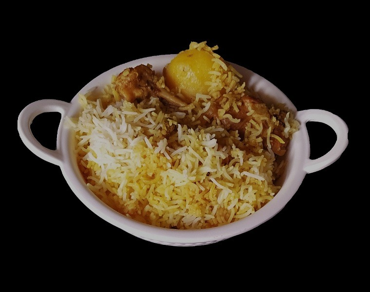

Kolkata Chicken Biryani

Indulge in the deliciousness of authentic Kolkata biryani with this recipe! With an extensive use of a string of
spices, herbs and veggies along with succulent chicken, cooked over dum, this one is surely going to tingle your
taste buds!
Ingredients
- 750 gm Basmati rice
- 1 kg chicken
- 2 potatoes
- 3 onions
- 3 tsp ginger garlic paste
- 2 tbsp yogurt
- 2 tsp biryani masala
- 1 tsp chilli powder
- 1 tsp turmeric powder
- 5 cloves
- 5 green cardamom
- 2 cinnamon stick
- 1 tsp rose water
- 1 tsp kewra water
- 2 bay leaves
- 1 tsp cumin seeds
- 3 tsp ghee
- 3 tsp vegetable oil
- Salt (as required)
- 3 tbsp saffron milk
- 1/2 cup refined oil
Steps
- First, take medium to large size potatoes, wash it and peel it out first. Then cut into halves or four into
pieces according to its size and boil it.
- Once the potatoes completely cool down then heat a pan with 1/2 cup of ghee and half cup of oil on medium
flame. Then fry the potatoes until it gets golden brown in color. In the meantime, take the same pan used
for frying potatoes, to fry onions.
Chicken:
- Now take the chicken pieces (curry cut), first, clean and wash it properly.
- Take a bowl with 1/2 cup of yogurt, then add 1 tsp of kashmiri chilli powder and and 1/2 tsp of salt. Mix it
well together.
- Once the mixing is done then add it to the chicken pieces, then add 2 tsp ginger garlic paste and mix it
well together.
- Add 1 1/2 tsp of powdered biryani masala and mixed it nicely with the chicken.
- Now squeeze 1/2 lemon(medium size) to mix its juice for marinating the chicken pieces.
- Lastly, add a handful of fried onions and mix it together. Now marinate chicken for at least 45 mins to 1
hour.
- After 45 minutes to 1 hour, take the same pan used for frying onion, place it on medium flame, then put the
marinated chicken to the pan. Let it cook.
- After 5 mins turn down the pieces and cook it for 10 minutes by covering the pan with a lid.
- Again turn the chicken pieces and cook it for the next 8-10 minutes, but don't cover it then.
- Turn off the heat when the gravy of this chicken will mostly dry up.
Rice:
- Take 750 gm basmati or long grain rice, wash it gently for 5-6 times and then soak it up for at least 30
minutes.
- After 30 minutes, take a big vessel with its 3/4 of water, place it on high flame. Add salt, refined oil in
it with bay leaves, green cardamoms, cloves, cinnamon sticks(break into 3-4 pieces). Let the water boil.
- When the water starts boiling then strain the soaked rice and add it to the water. Let the rice boil in
water.
- While cooking the rice must check it frequently as rice can not be cooked more than 80 percent. Then turn
off the heat and immediately drain the starch from the rice.
- Then you may spread the rice in some plates and completely cool it down. This procedure will prevent the
rice from overcooking. Once the rice totally cools down then keep it aside.
Saffron milk:
- Take warm milk in a bowl, add a pinch of saffron strands and let it soak for 15-20 minutes.
- After 15 minutes, when saffron strands get soft and almost leave its color in milk, then first use your
fingertips to rub the strands to release more color from it.
- Then add kewra water and 3 drops of rose water one by one.
Assemble:
- Take a thick bottom wide mouth vessel. First, make it dry, then first spread the bay leaves in the bottom of
the vessel.
- First spread 1/2 inch to 3/4 inch thick layer of rice on the bay leaves.
- Then place two chicken pieces and three pieces of potatoes on the first layer of rice. Then add 3-4 tbsp of
chicken gravy on the rice and chicken pieces.
- Now first sprinkle 1/2 tsp biryani masala all over the layer. Then sprinkle 3-4 tsp of essence or flavour
added saffron milk all over the layer.
- Next, sprinkle 2-3 tsp of ghee from the top of the layer. Lastly, sprinkle a handful of crispy fried onion
on the layer and half tsp of salt. The first layer is complete.
- Then add rice from the top to completely cover. Then again assemble the next layer with the same process
described just before. Again cover the second layer with white rice and make the third layer in the same
way.
- Lastly, cover the last layer with an ample amount of rice to make sure nothing can be visible from the top.
- Then end up the assembling process by sprinkling 3-4 tsp of ghee, a pinch of biryani masala(not more than
that) from the top. Lastly add salt and the hard-boiled eggs on the top of the rice and close its lid.
Put biryani on Dum:
- Place the biryani vessel on the lowest heat of the oven. Cover with aluminum foil or place another pan on
the top of the biryani vessel full of hot water.
- It'll take a maximum of 30 minutes-45 minutes to be perfectly done.
- Then turn off the heat. Kolkata special chicken biryani is ready to serve, serve it with a side dish, or
just with salads.